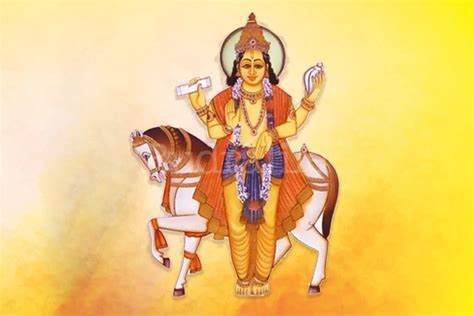

Shukra Puja - Worship of Lord Shukra (Venus)

What is Shukra Puja?
Why Perform Shukra Puja?
Benefits
How to Perform
Conclusion
Shukra Puja: Worship of Lord Shukra (Venus)
Shukra Puja is a sacred Hindu ritual dedicated to Lord Shukra, the planet Venus, associated with wealth, beauty, love, and material success. It is performed to seek prosperity, marital bliss, and success in creative pursuits.
What is Shukra Puja?
Shukra Puja is a Hindu ritual dedicated to Lord Shukra, the planet Venus, who is considered the god of wealth, luxury, beauty, and material success. Lord Shukra is also associated with love, romance, and creativity. Worshipping Shukra is believed to bring success, harmony in relationships, and material blessings.
Why Do We Perform Shukra Puja?
- Wealth and Prosperity: Shukra is linked with the creation of wealth and financial success. Performing this puja brings abundance and material blessings.
- Marital Bliss: Venus governs relationships, beauty, and love. The puja is known to bring harmony, peace, and prosperity in married life.
- Success in Creative Pursuits: Shukra governs the arts, fashion, music, and creativity. It is believed to enhance creative talents.
- Physical and Mental Well-being: Worshipping Shukra helps in overcoming mental stress and physical ailments.
- Love and Relationship Strengthening: This puja helps strengthen bonds in love and relationships, promoting harmony and understanding.
Benefits of Shukra Puja
- Wealth Creation: Helps attract material wealth and luxury.
- Enhanced Beauty and Charm: Improves personal charm and physical beauty.
- Love and Romance: Brings romantic success, marital happiness, and peace in relationships.
- Creative Success: Boosts artistic talents and success in creative fields like art, fashion, and music.
- Relieves Mental Stress: Shukra Puja helps in mental relaxation and peace of mind.
How to Perform Shukra Puja (Step-by-Step)
Shukra Puja is traditionally performed on Fridays, as Venus (Shukra) is considered to rule the day. Here’s a simple step-by-step guide:
- Preparation: Cleanse the area and gather necessary items like a picture or idol of Lord Shukra, flowers (preferably white or pink), incense, a lamp, and sweets or fruits for offering.
- Clean Yourself: Bathe and wear clean clothes, preferably in shades of white, pink, or green.
- Light the Lamp and Incense: Light a lamp (preferably ghee) and incense to purify the space.
- Offer Flowers and Prayers: Offer flowers to Lord Shukra while chanting mantras such as "Om Shukraya Namah" to invoke his blessings.
- Recite the Shukra Mantra: Chant the Shukra mantra, such as "Om Shukraya Namah" 108 times for prosperity and blessings.
- Offer Sweets or Fruits (Prasad): Offer prasad to Lord Shukra, typically sweet offerings like laddus or fruits.
- Perform Aarti: End the puja by performing aarti, moving a lighted lamp in a circular motion around Lord Shukra's image while singing praises.
- Prayers for Prosperity: Close the puja by praying for financial success, love, and creativity.
- Repeat Regularly: Perform Shukra Puja every Friday or on auspicious days for consistent blessings from Lord Shukra.
Conclusion
Shukra Puja is a highly beneficial ritual that helps bring wealth, prosperity, love, beauty, and success in creative pursuits. By performing this puja regularly, devotees can invite the blessings of Lord Shukra and achieve happiness and fulfillment in all aspects of life.